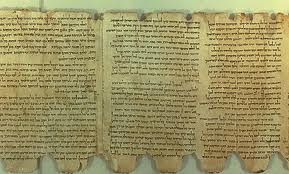
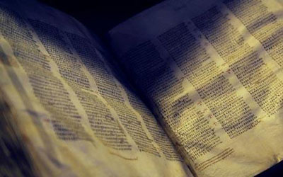
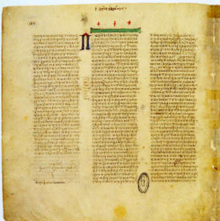
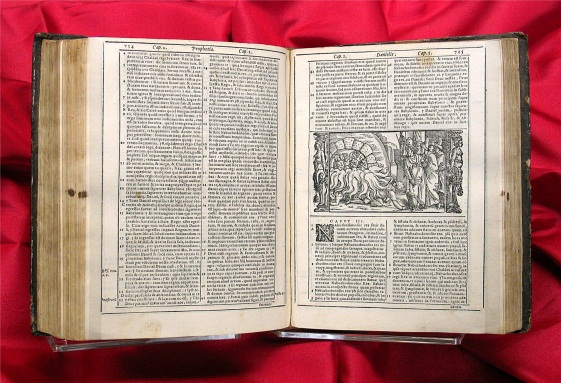
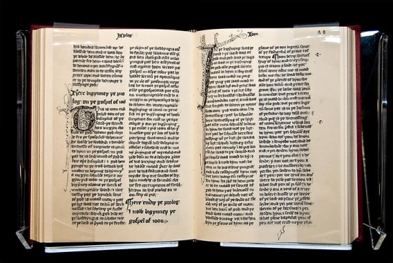
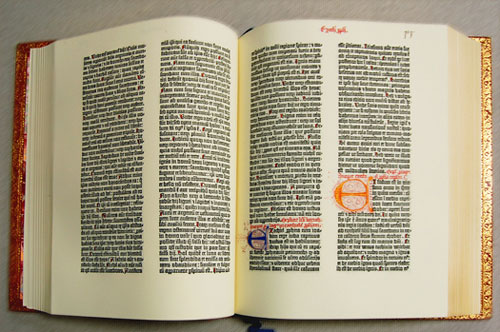
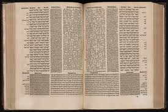

LỊCH SỬ QUYỂN KINH THÁNH
Trần Đình Tâm
Giới thiệu:
Cơ-đốc nhân tin Kinh Thánh là Lời của Đức Chúa Trời, là khuôn vàng thước ngọc cho sự giảng dạy và nếp sống hằng ngày; tuy nhiên, đa số con dân Chúa không biết rõ quyển Kinh Thánh mình đang có đến từ đâu, đã trải qua những giai đoạn nào trước khi đến tay mình. Sự hiểu biết về lịch sử hình thành quyển Kinh Thánh sẽ giúp cho chúng ta trên các phương diện sau:
* Có sự tin quyết rằng Lời của Đức Chúa Trời đã được chính Chúa bảo vệ và được lưu truyền theo dòng thời gian cho các thời đại về sau là không hề sai lầm, đáng cho chúng ta tin theo trọn vẹn.
* Sẵn sàng giải thích cho những người còn hoài nghi về tính xác thật của Kinh Thánh, nhằm xóa bỏ những nghi ngờ cho rằng các bản Kinh Thánh ngày nay không còn đúng theo nguyên bản nữa vì trải qua nhiều quá trình sao chép hoặc phiên dịch.
* Giúp chúng ta hiểu tại sao có sự khác biệt giữa các bản dịch Kinh Thánh.
A. Những thuật ngữ quan trọng:
Chúng ta cần hiểu ý nghĩa của các thuật ngữ quan trọng sau đây:
* Nguyên bản (autograph): Là bản Kinh Thánh gốc, do chính tay tác giả viết dưới sự soi dẫn của Đức Thánh Linh.
* Bản sao (manuscript): Không phải là bản Kinh Thánh gốc, nhưng được sao chép lại từ bản gốc. Vì máy in chỉ được phát minh và hoàn thiện vào năm 1456, cho nên trước năm 1456, các bản sao Kinh Thánh đều là các bản viết bằng tay. Đó là lý do tại sao gọi các bản sao (copy) là manuscripts trong Anh ngữ.
* Bản in (print): Kể từ khi người ta dùng máy in để in Kinh Thánh (1456), người ta không còn sao chép bằng tay nữa, nên tất cả những bản Kinh Thánh được xuất bản từ năm 1456 đều được xem là bản in.
* Bản dịch (translation): Là những bản Kinh Thánh đã được chuyển ngữ từ nguyên bản hay từ bản sao nhằm để mọi dân tộc trên thế giới đều có thể đọc được Kinh Thánh bằng ngôn ngữ của mình.
* Kinh điển (canon): Là danh sách các quyển Kinh Thánh được Đức Thánh Linh soi dẫn để con người viết ra, được công nhận chính là Lời của Đức Chúa Trời. Sở dĩ có thuật ngữ kinh điển là nhằm để phân biệt với một số sách mà người ta thêm vào trong bộ Kinh Thánh Cựu Ước.
* Ngoại kinh hay còn gọi là Ẩn kinh (apocrypha): Là những sách được thêm vào trong bộ Kinh Thánh Cựu Ước, đặc biệt là Kinh Thánh của Giáo hội Công Giáo La-mã và Kinh Thánh của Chính Thống Giáo Đông Phương (Eastern Orthodox). Những sách nầy không được công nhận là do Đức Chúa Trời soi dẫn, nên không được kể là Kinh điển.
B. Ngôn ngữ của Kinh Thánh nguyên bản:
Kinh thánh nguyên bản được viết bởi 3 ngôn ngữ sau:
1. Tiếng Hê-bơ-rơ (Hebrew): Hầu hết các sách trong phần Cựu Ước bằng tiếng Hê-bơ-rơ, là một ngôn ngữ rất phong phú, giàu hình ảnh của người Do Thái thời bấy giờ nên rất thích hợp cho việc ghi chép các thể loại luật pháp,văn thơ, lịch sử của Kinh Thánh. Ngôn ngữ Hê-bơ-rơ được xem là ngôn ngữ cổ xưa từ 1.450 năm trước công nguyên và được bảo tồn cho đến ngày nay.
2. Tiếng A-ram (Aramaic): Chỉ có một phần nhỏ trong Cựu Ước được viết bằng tiếng A-ram, là ngôn ngữ của người Mê-đô Ba Tư (Medo-Persian). Lý do là kể từ năm 586 B.C, thành Giê-ru-sa-lem bị phá hủy bởi quân đội của vua Ba-by-lôn là Nê-bu-cát-nêt-sa, dân Do Thái bị bắt đem qua Ba-by-lôn, sau đó họ tiếp tục sống trong đế quốc Mê-đô Ba Tư, tại đây họ bắt đầu nói tiếng A-ram. Tiếng A-ram là ngôn ngữ rất thông dụng trong thời đó, ảnh hưởng trên một vùng rộng lớn thuộc đế quốc Mê-đô Ba Tư, và ngay trong thời của Chúa Jesus, người Do Thái cũng nói với nhau bằng tiếng A-ram.
Sách Đa-ni-ên 2:4 đến 7:28 và Ê-xơ-ra 4:8 đến 6:18; Ê-xơ-ra 7:12-26 được viết bằng tiếng A-ram.
3. Tiếng Hy-lạp (Greek): Toàn bộ các sách trong phần Tân Ước đều được viết bằng tiếng Hy-lạp. Sự chinh phục của đế quốc Hy-lạp khởi đầu với Alexandre khiến cho ngôn ngữ Hy-lạp có ảnh hưởng mạnh mẽ trên lĩnh vực văn chương trong đời sống của các dân tộc vùng Trung đông. Ngôn ngữ Hy-lạp rất phong phú, được xem là ngôn ngữ bác học và rất thích hợp để biên chép Kinh Thánh Tân Ước.
Toàn bộ Cựu Ước được trước tác từ khoảng 1400 B.C đến 400 B.C.
Toàn bộ Tân Ước được trước tác từ khoảng 45 A.D. đến 95 A.D.
C. Các bản sao Kinh Thánh (Manuscripts):
Vì Kinh Thánh nguyên bản được ghi chép trên các cuộn giấy chỉ thảo (Papyrus) hay da (Parchment) được đóng lại thành sách, những loại vật liệu nầy không bảo tồn được lâu nên ngày nay tất cả các nguyên bản Kinh Thánh không còn nữa. Người ta chỉ còn giữ lại được các bản sao mà thôi, các bản sao vẫn tiếp tục được chép lại trên cùng vật liệu là giấy chỉ thảo hay da, từ thế hệ nầy cho đến thế hệ kế tiếp, người ta tiếp tục sao chép khi thấy các bản sao cũ bắt đầu rách nát, cứ thế cho tới khi máy in được phát minh thì người ta không còn phải chép bằng tay nữa. Các bản sao được ghi chép chính xác từ nguyên bản nên các bản sao có giá trị như nguyên bản. Hiện nay các bản sao rất cổ được lưu trử rất cẩn thận trong các viện bảo tàng. Có rất nhiều bản sao Kinh Thánh, xin chỉ kể ra những bản quan trọng nhất cần được biết:
1. Các bản sao Cựu Ước cỗ:
* Bản Geniza: Được chép vào khoảng 400AD, gồm nhiều sách trong Cựu Ước bằng tiếng Hê-bơ-rơ và A-ram. Được tìm thấy vào năm 1947 tại Nhà hội của người Do Thái ở Cairo, Ai-cập.
* Bản Massoretic: Được thực hiện trong những năm 500AD-900AD. Đây là bản sao Kinh Thánh rất tiêu chuẩn của người Do Thái. Những thành viên trong ban sao chép đã phải tuân theo những quy định rất nghiêm nhặt để không thể xãy ra những sai sót.
* Bản Cairo Codex: Do dòng họ Ben Asher thực hiện vào năm 895 A.D. Bản nầy được sao chép từ bản Massoretic tiêu chuẩn nói trên.
* Bản Aleppo Codex: Cũng do dòng họ Ban Asher sao chép và hoàn tất vào 950 A.D. Được tìm thấy vào năm 1958. Bảng nầy rất quý giá.

Bản Aleppo Codex
* Cuộn Biển Chết (Dead Sea Scrolls): Có thể nói việc tìm thấy các “Cuộn Biển Chết” gồm các bản sao của hầu hết các sách trong Cựu Ước (ngoại trừ sách Ê-xơ-tê) là một sự khám phá tuyệt vời nhất ở thế kỷ 20 của ngành khảo cổ; sự phám phá quan trọng nầy đã xóa tan mọi sự nghi ngờ của con người về tính không xác thật của các bản sao Kinh Thánh đã được lưu truyền trước đó.
Các bản sao nầy trước hết được một cậu bé chăn chiên vô tình phát hiện vào năm 1947, trong một hang động ở vùng Qumran, phía tây bắc của Biển Chết (nên được gọi là Cuộn Biển Chết). Sau đó, trong khoảng thời gian từ 1947 đến 1956, các nhà khảo cổ đã tìm ra hơn 800 cuộn sách cổ xưa trong 10 hang động khác, 30% các tài liệu đó là các bản sao Kinh Thánh chép tay, phần nhiều đã bị rách thành nhiều mãnh.
Các Cuộn Biển Chết là bằng chứng cho thấy Đức Chúa Trời bảo tồn Lời của Ngài và là nguồn tài liệu quý giá nầy giúp cho công việc sao chép và dịch thuật Kinh Thánh về sau được chính xác hơn và rõ ràng hơn.

Bản sao Kinh Thánh của Cuộn Biển Chết
2. Các bản sao Tân Ước cỗ:
* Bản John Rylands (130 A.D.) : Được xem là bản sao Tân Ước lâu đời nhất, hiện được lưu trữ tại Thư viện John Rylands, thành phố Manchester, nước Anh.
* Bản Bodmer Papyrus II (150-200 A.D)
* Bản Chester Beaty (200 A.D): Được viết trên giấy chỉ thảo, đang được lưu giữ tại Viện Bảo Tàng Beaty, Dublin, nước Ireland.
* Bản Codex Sinaiticus (350 A.D): Đang được lưu giữ tại Viện Bảo Tàng Anh Quốc. Bản nầy bị rách nát làm 800 mãnh, những chuyên gia phục hồi đã phải lắp ghép chúng lại với nhau. Xem hình bên dưới.

Một trang trong bản Sinaticus sau khi phục hồi.
Tiến sĩ Scot McKendrick nhận xét: "Bản Sinaiticus là một trong những tác phẩm vĩ đại nhất của con người. Văn bản có hơn 1.600 năm tuổi này là cánh cửa để chúng ta nhìn vào sự phát triển ban đầu của đạo Cơ đốc và góp phần giải thích cho câu hỏi: Kinh thánh đã được truyền từ đời này qua đời khác như thế nào?
* Bản Codex Washingtonensis (450 A.D):

Bản Codex Washingtonensis
D. Các bản dịch cỗ:
* Bản Aramaic Targum (400 B.C): Đây là bản dịch Cựu Ước sang tiếng A-ram, là ngôn ngữ thông dụng của dân Do Thái kể từ khi bị lưu đày ở Ba-by-lôn. Bản dịch nầy đáp ứng nhu cầu hiểu biết Cựu Ước của người Do Thái nói tiếng A-ram.
* Bản Bảy Mươi (Septuagint): Là bản Kinh Thánh Ngũ Kinh bằng ngôn ngữ Hy-lạp được hình thành vào khoảng năm 250 B.C. Bản Bảy mươi ra đời trong giai đoạn thế giới chịu ảnh hưởng của văn chương Hy-lạp, những người Do Thái sống lưu lạc ở các nước khác không được đọc Kinh Thánh bằng tiếng Hê-bơ-rơ, họ cần có quyển Kinh Thánh viết bằng ngôn ngữ Hy-lạp. Công trình phiên dịch từ tiếng Hê-bơ-rơ sang tiếng Hy-lạp được được thực hiện bởi 72 nhà dịch thuật thông thạo tiếng Hy-lạp, được tuyển chọn từ 12 chi phái Y-sơ-ra-ên (mỗi chi phái 6 vị), họ được gửi đến Alexandria, đặt dưới sự bảo trợ của vua Ptolemy Philadelphia nước Ai-cập. 72 vị nầy đã hoàn tất phiên dịch Ngũ Kinh trong suốt 72 ngày nên được gọi là Bản Bảy Mươi (LXX). Sau nầy các sách khác trong Cựu Ước cũng được tiếp tục dịch sang tiếng Hy-lạp bởi các học giả khác và được nhập chung vào Bản Bảy Mươi.

Bản Bảy Mươi (septuagint)
Trong thời kỳ Hội Thánh đầu tiên, các Cơ-đốc nhân thường trích dẫn những câu Kinh Thánh Cựu Ước từ Bản Bảy Mươi nầy.
* Các Bản Dịch từ 180 A.D. đến 300 A.D.: Là các bản dịch Tân Ước sang tiếng La-tin, Syriac và Coptic. Có thể kể: Bản Old Latin (195 A.D.), bản The Old Syriac (300 A.D) và bản The Coptic Version (300 A.D)
* Bản Vulgate (405 A.D): Là bản dịch cả Cựu Ước và Tân Ước sang tiếng La-tin. Tác giả Bản vulgate là Jerome, là một tu sĩ Công Giáo, ông rất thông thạo tiếng La-tin nên được Giáo hoàng Damacus I giao trách nhiệm phiên dịch toàn bộ Kinh Thánh sang tiếng La-tin. Bản dịch của Jerome chính xác nên được Giáo Hội Công Giáo La-mã công nhận có giá trị tương đương với bản Kinh Thánh Tiếng Hê-bơ-rơ của Cựu Ước và Hy-lạp của Tân Ước. Ngoài ra, Bản Vulgate cũng được Hội Nghị Trent năm 1546 chính thức công nhận là bản Kinh Thánh chuẩn của Giáo Hội Công Giáo.

Bản Kinh Thánh Tân-Cựu Ước Vulgate
* Bản First English Translation (1380 A.D.): Đây là bản Kinh Thánh toàn bộ đầu tiên bằng Anh ngữ do John Wycliffe thực hiện. Điều cần chú ý là John Wycliffe không dịch trực tiếp từ nguyên bản tiếng Hê-bơ-rơ và tiếng Hy-lạp mà dịch từ bản Vulgate nói trên.

Bản Kinh Thánh Anh ngữ John Wycliffe
E. Kinh Điển Cựu Ước (Canon of The Old Testament):
Gồm 39 sách, được phân loại như sau:
* 5 Sách Luật Pháp:
Sáng Thế Ký; Xuất Ê-Díp-Tô-Ký; Lê-vi Ký; Dân Số Ký; Phục Truyền Luật Lệ Ký
* 12 Sách Lịch Sử:
Giô-suê; Các Quan Xét; Ru-tơ; I Sa-mu-ên; II Sa-mu-ên; I Các Vua; II Các Vua; I Sử Ký; II Sử Ký ; Ê-xơ-ra; Nê-hê-mi; Ê-xơ-tê.
* 5 Sách Thơ Văn:
Gióp; Thi Thiên; Châm Ngôn; Truyền Đạo; Nhã Ca.
* 17 Sách Tiên Tri:
Ê-sai; Giê-rê-mi; Ca Thương; Ê-xê-chi-ên; Đa-ni-ên; Ô-sê; Giô-ên; A-mốt; Áp-đia; Giô-na; Mi-chê; Na-hum; Ha-ba-cúc; Sô-phô-ni; A-ghê; Xa-cha-ri; Ma-la-chi.
F. Kinh Điển Tân Ước (Canon of The New Testament):
Gồm 27 sách được phân chia như sau:
* 4 Sách Phúc Âm:
Ma-thi-ơ; Mác; Lu-ca; Giăng.
* 1 Sách Lịch Sử Hội Thánh:
Công Vụ Các Sứ Đồ.
* 21 Sách Thư Tín:
Rô-ma; I Cô-rinh-tô; II Cô-rinh-tô; Ga-la-ti; Ê-phê-sô; Phi-líp; Cô-lô-se; I Tê-sa-lô-ni-ca; II Tê-sa-lô-ni-ca; I Ti-mô-thê; II Ti-mô-thê; Tít; Phi-lê-môn; Hê-bơ-rơ; Gia-cơ; I Phi-e-rơ; II Phi-e-rơ; I Giăng; II Giăng; III Giăng; Giu-đe.
* 1 Sách Tiên Tri:
Khải Huyền.
G. Các Ngoại Kinh (Apocrypha)
Gồm 15 sách như sau:
Tên sách Niên biểu Đặc điểm
Wisdom of Solomon 30 B.C. Giáo huấn
Ecclesiasticus 32 B.C. Giáo huấn
Tobit 200 B.C. Tiểu thuyết Tôn Giáo
I Esdras 150 B.C. Lịch sử & Truyền thuyết
I Maccabees 110 B.C. Lịch sử
II Maccabees 100 B.C. Lịch sử & Truyền thuyết
Judith 150 A.D. Tiểu thuyết
Baruch 100 A.D. Tiên Tri
Letter of Jeremiah 200 B.C. Tiên Tri
II Esdras 100 A.D. Tiên Tri
Additions to Esther 130 B.C. Truyền thuyết
Prayer of Azariah* 100. B.C. Truyền thuyết
Suzanna (Daniel 13) 100 B.C. Truyền thuyết
Bel & the Dragon (Daniel 14) 100 B.C. Truyền thuyết
Prayer of Manasseh 150 B.C Truyền thuyết
[* Prayer of Azariah còn có tên khác là “Song of Three Hebrew Children”]
H. Kinh Điển Tân Ước được căn cứ trên những tiêu chuẩn nào?
Từ cuối thế kỷ thứ nhất cho đến thế kỷ thứ 4, xuất hiện rất nhiều tác phẩm do nhiều tác giả viết ra tự cho là có giá trị như Kinh Thánh, tự cho là có sự soi dẫn của Chúa, trong đó có nhiều sách mà người ta không biết rõ tác giả thật là ai, có nhiều sách mạo danh tác giả là các sứ đồ! Điều nầy đưa đến một vấn đề là cần phân biệt giữa những sách thuộc kinh điển, tức là được Đức Thánh Linh soi dẫn với những sách được viết mà không có sự soi dẫn. Các giáo phụ của Hội Thánh sơ khai đã đưa ra những chuẩn mực (criteria) để qua đó đánh giá một quyển sách có giá trị kinh điển. Các sách được chọn làm kinh điển phải hội đủ các tiêu chuẩn sau:
1. Sách cần phải chứa đựng thẩm quyền của Sứ Đồ. Có nghĩa là do chính Sứ Đồ viết ra, là những người được Chúa Jesus kêu gọi làm Sứ Đồ; hoặc được viết bởi những người từng đi theo Chúa Jesus, chứng kiến tận mắt cuộc đời Chúa Jesus, nghe tận tai sự dạy dỗ của Chúa Jesus và cũng được các Sứ Đồ công nhận, vì những tác giả nầy gần gủi với các Sứ Đồ, cộng tác với các Sứ Đồ.
2. Nội dung của sách chứa đựng những sự dạy dỗ phải phù hợp với mẫu mực của đức tin (Rule of faith) mà Chúa Jesus truyền dạy và có quyền năng làm thay đổi nếp sống.
3. Sách được Hội Thánh đầu tiên công nhận là Lời của Đức Chúa Trời.
4. Sách bày tỏ về Đức Chúa Trời giống như Cựu Ước bày tỏ về Đức Chúa Trời.
Căn cứ vào các tiêu chuẩn nêu trên, một số khá nhiều các sách xuất hiện trong thời kỳ Hội Thánh đầu tiên đã không được kể là kinh điển, xin liệt kê vài cuốn:
* Tin Lành của Ni-cô-đem: Kể về các việc làm của quan tổng đốc Phi-lát.
* Tin Lành của người Hê-bơ-rơ: Thêm vào 4 sách Phúc âm kinh điển.
* Tin Lành của Phi-e-rơ: Mang tinh thần bài Do Thái.
* Tin Lành của Ma-thi-ơ (Sách giả mạo): Kể nhiều phép lạ Chúa Jesus làm khi còn nhỏ.
* Tin Lành của Thô-ma: Thuật đời sống Chúa Jesus lúc 5-12 tuổi, Chúa làm nhiều phép lạ nhằm thỏa mãn tánh tò mò của trẻ con.
* Tin Lành của Giô-sép: Nhằm tôn sùng Giô-sép.
* Ma-ri biến hóa: Nhằm mục đích tôn vinh và thờ lạy bà Ma-ri. Thân xác của bà được đem lên thiên đàng.
* Ma-ri sinh ra: Nhằm mục đích tôn vinh bà Ma-ri.
* v.v…
I . Các bản in Kinh Thánh đầu tiên:
Chúng ta rất khó xác định chính xác năm nào máy in lần đầu tiên được phát minh, vì công việc “in ấn” khởi đầu từ những thiết bị rất thô sơ rồi dần dần được hoàn thiện theo thời gian dài, quá trình nầy kéo dài đến hàng trăm năm. Tuy nhiên, điều đáng chú ý là kể từ khi máy in được phát minh, người ta không còn phải tiếp tục sao chép Kinh Thánh bằng cách viết tay nữa; máy in đã giúp in Kinh Thánh nhanh chóng hơn, với sộ lượng rất lớn, và được liên tục xuất bản cho đến ngày hôm nay. Xin chỉ kể những bản Kinh Thánh đầu tiên được xuất bản dưới dạng bản in (printed Bible):
* Bản Gutenberg (1456): Đây là bản in Kinh Thánh đầu tiên bằng tiếng La-tin.
* Bản Erasmus (1514): Đây là bản in Tân Ước bằng tiếng Hy-lạp.
* Bản Polyglot Bible (1522): Bản in Cựu Ước bằng tiếng Hê-bơ-rơ, A-ram, Hy-lạp và La-tin; phần Tân Ước bằng tiếng Hy-lạp và La-tin. Vì trình bày nhiều ngôn ngữ song song với nhau nên bộ Kinh Thánh nầy gồm tất cả 6 cuốn.
* Bản King James Version (1611): Viết tắt là KJV. Đây là bản tiếng Anh, được phiên dịch theo nguyên ngữ Hê-bơ-rơ, và Hy Lạp.
 
Bản in Kinh Thánh đầu tiên (1456) Bản Polyglot Bible, đa ngôn ngữ (1522)
K. Kết Luận:
Kinh Thánh là Lời của Đức Chúa Trời ban cho con người, để con người hiểu biết về Đấng tạo dựng nên mình; biết về mục đích của Đức Chúa Trời đối đối với con người; biết về chương trình cứu rỗi của Đức Chúa Trời dành cho con người, để con người đọc và tuân theo hầu cho được cứu và sống theo tiêu chuẩn của Đức Chúa Trời. Vì tầm mức quan trọng như vậy nên chúng ta có thể thấy rõ Đức Chúa Trời đã gìn giữ và lưu truyền Lời của Ngài trãi qua suốt nhiều thời đại cho đến ngày nay. Kinh Thánh không những tồn tại trên văn kiện là một quyển sách nhưng còn tồn tại mãi mãi trong lòng của tất cả mọi người, là những ai tin quyết Kinh Thánh chính là Lời của Đức Chúa Trời. Thật đúng như tiên tri Ê-sai 40:8 đã chép:
“Cỏ khô, hoa rụng; nhưng lời của Đức Chúa Trời chúng ta còn mãi đời đời!”
Tháng 11, 2010.